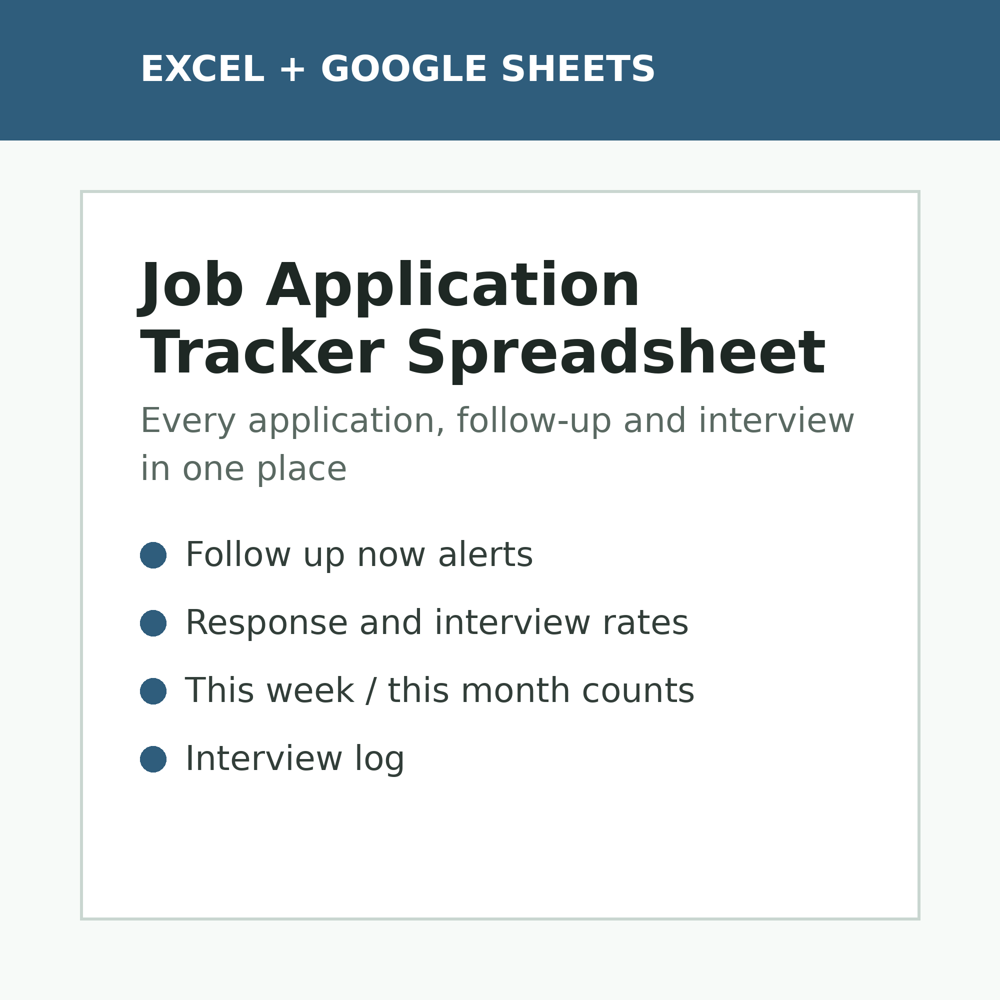

Job Application Tracker Spreadsheet
$12
Log every application, see its status at a glance and get a Follow up now alert when a follow-up date comes due. The dashboard works out your response rate, interview rate and how many applications you sent this week and this month.
Get it on Gumroad →
What's included
- Application log for 300 jobs with a 7-stage status pipeline
- Follow up now alerts when a follow-up date is due and the application is still active
- Dashboard: totals by status, response rate, interview rate and offers
- Applications sent this week and this month, counted from today's date
- Results by job source, so you can see which sites get replies
- Interview log with rounds, dates, prep notes, outcomes and thank-you reminders
Instant digital download. Works in Microsoft Excel and Google Sheets.
← All TallyBloom spreadsheets